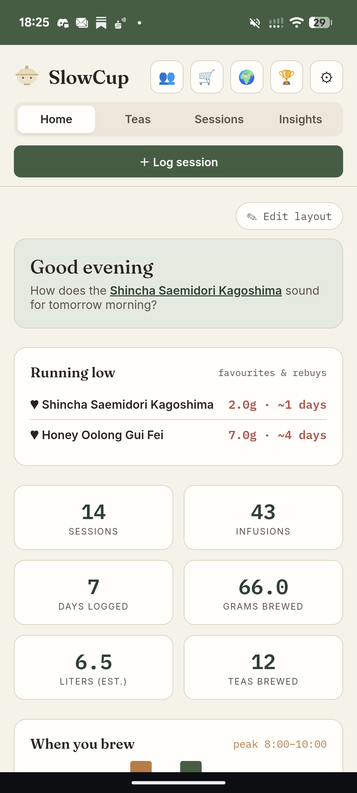
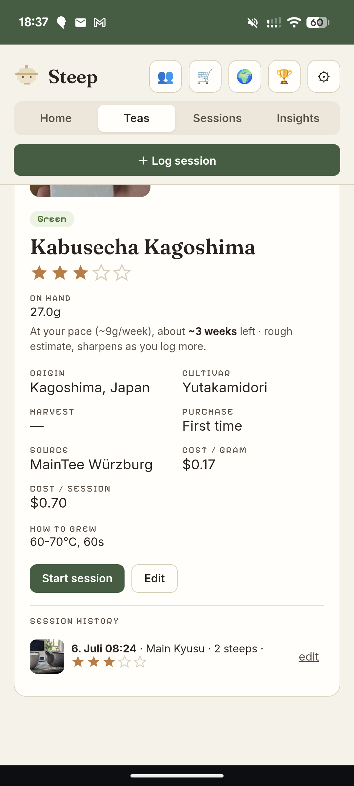
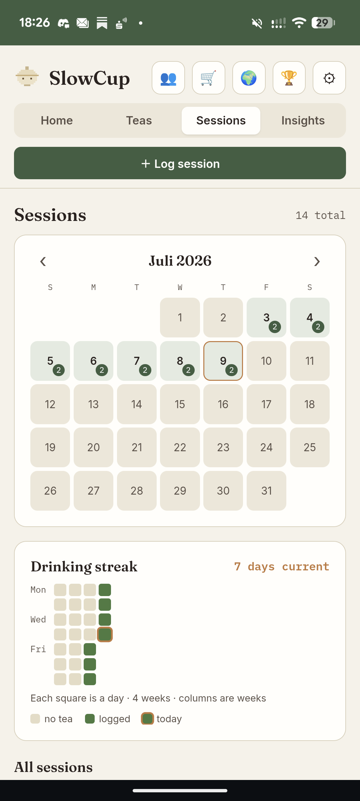

A quiet companion for your daily brewing — sessions, steeps, and gentle guidance that learns how you pour. No streaks, no scores, no noise.



The app serves the brew; it never gamifies it. No streaks to protect, no badges pushed at you, nothing to chase. When the day's tea is logged, it rests.
Suggestions drawn from your own sessions — “heavier pour than your baseline; times shortened ≈19%.” Always labelled as an estimate, never a guess dressed as your data.
Everything you log is yours. Export the whole library to a file any time and take it anywhere. No lock-in, no account you can't leave.
SlowCup is in private beta — opened to a few tea people at a time. If it sounds like your kind of quiet, ask for a key.